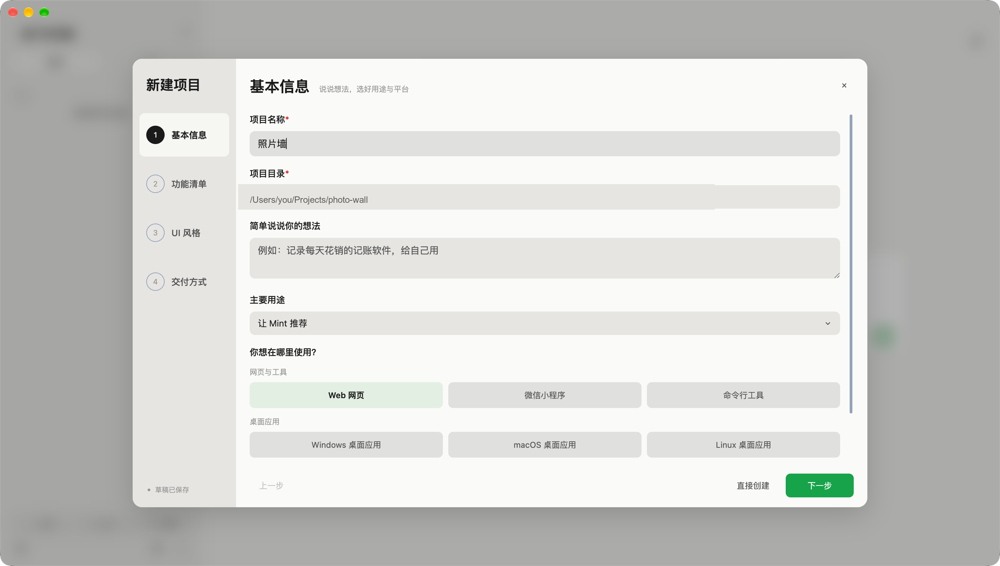
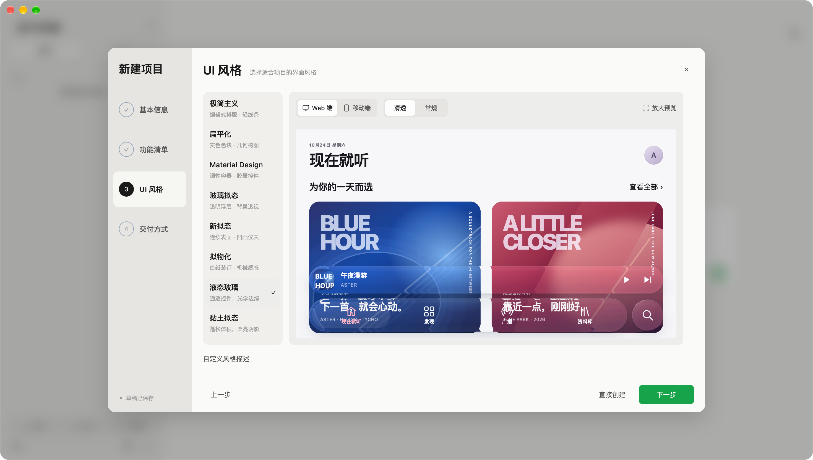
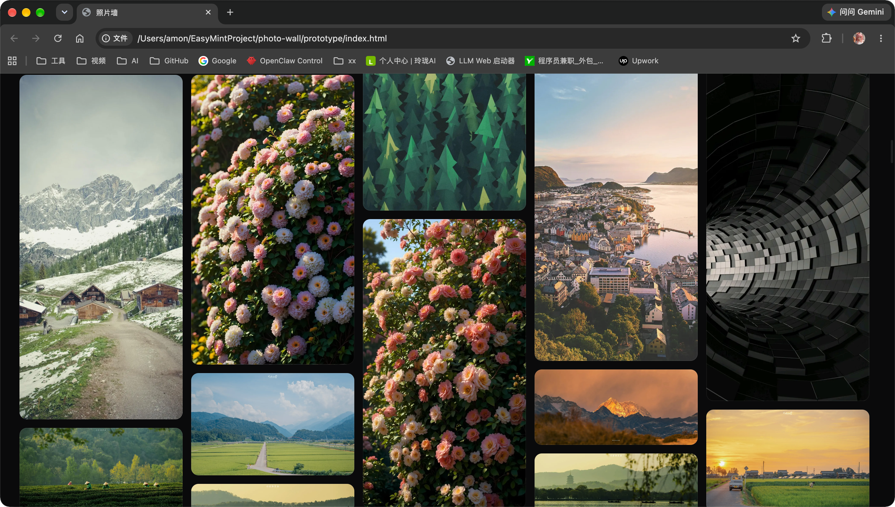
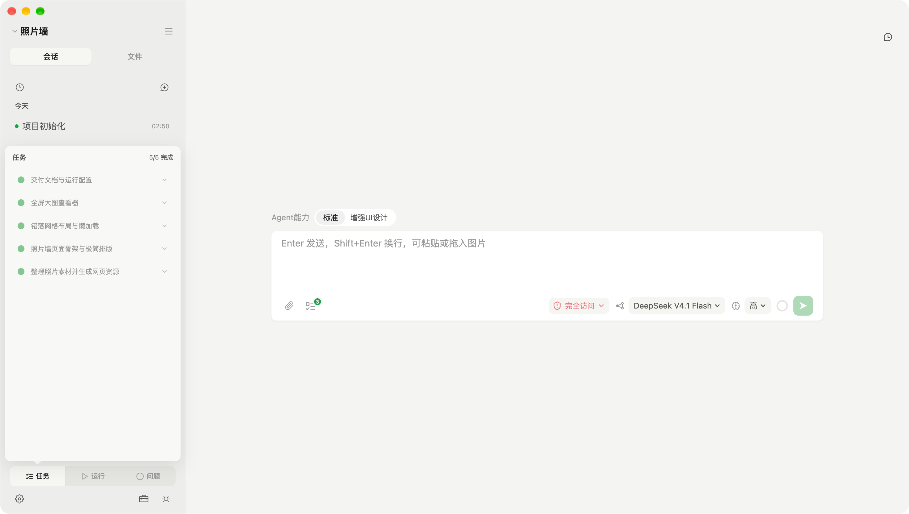
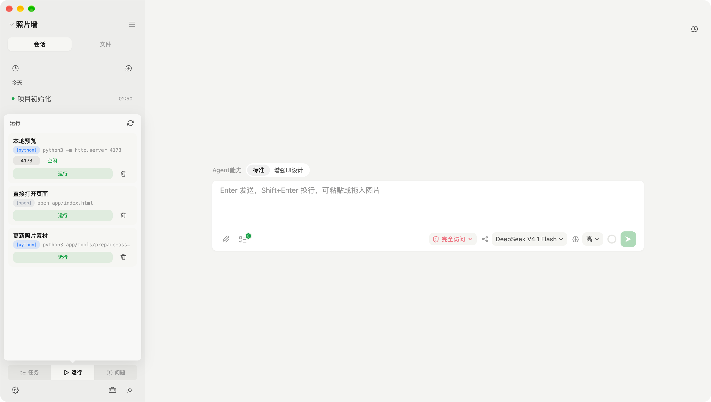
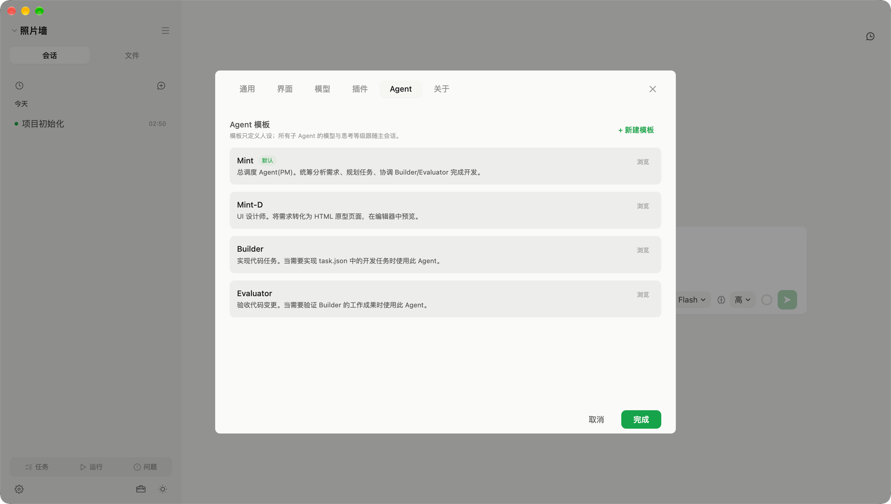
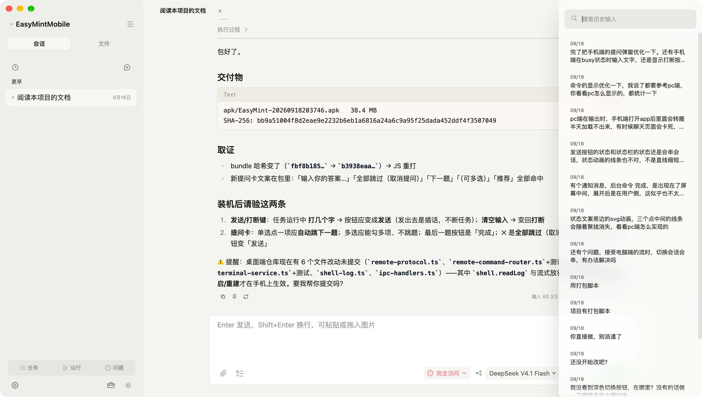
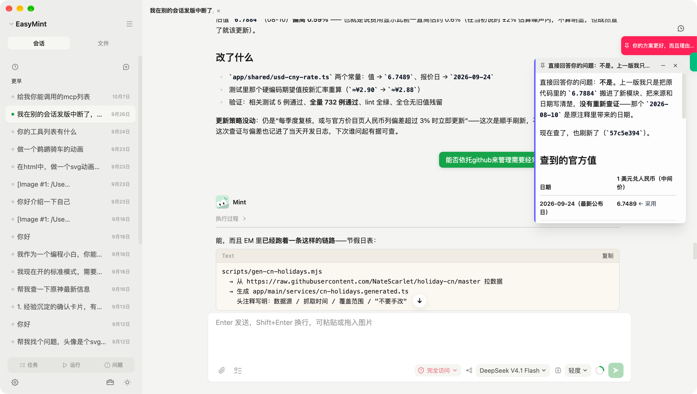

想法还模糊？
从几个选择开始。
用途、功能、风格、交付方式，按顺序理清。没有完整方案，也能先选最接近的方向。
- 现成选项，让第一步更容易
- 拿不准的地方，继续和 Mint 商量
从想法到运行
先把需求聊清楚，再看原型、做实现、检查和运行。
你负责判断方向，Mint 帮你推进每一步。
产品实拍 / 01 — 08
用途、功能、风格、交付方式，按顺序理清。没有完整方案，也能先选最接近的方向。
把抽象的“简约一点”“有科技感”变成能直接比较的页面。网页和手机效果，都可以先看看。
界面类项目先做可交互的原型。布局、内容和操作合不合适，试过之后再推进正式实现。
把大目标拆成具体任务，完成一项、确认一项。进度留在会话旁边，随时知道下一步做什么。
常用启动命令收进运行面板。打开预览、查看端口和日志，在同一个窗口里完成。
Mint 统筹需求和任务，Builder 写实现，Evaluator 对照要求检查，Mint-D 负责界面原型。
指令和提问按时间保留。想沿用之前的描述，找到那一条，填回输入框就能继续。
把需要反复参考的内容钉成便签。对照需求、接着讨论时，不用再往上翻很长的聊天记录。








连接支持的供应商账号或 API Key，为不同任务选择模型。EasyMint 免费，模型使用按供应商规则计费。
代码、项目文件和会话保存在本地。AI 请求会把相关上下文发送给你选择的供应商。
只读、标准、完全访问三档权限。日常开发使用标准模式，命令在系统沙盒内执行。
手机与电脑连在同一局域网，扫码配对后，就能发消息、查看思考和工具调用，跟进任务进度。
开始你的第一个项目
下载桌面应用，接上 AI 供应商，
从一句“我想做……”开始。
MIT 开源 · 应用免费 · 模型费用另计
安装包来自 GitHub Releases。查看全部下载
当前安装包未经 Apple 开发者签名及公证。确认来源可信后，可在「系统设置 → 隐私与安全性」中选择「仍要打开」。也可以安装到「应用程序」后，在终端执行：
sudo xattr -rd com.apple.quarantine /Applications/EasyMint.app输入登录密码后再打开。此命令只清除 EasyMint 的隔离标记；每次手动下载新安装包需要重新处理。
安装好以后 按引导连接支持的 AI 账号或填写 API Key，再新建项目。Windows 若出现 SmartScreen 提示，确认来源后可选「更多信息 → 仍要运行」；Linux AppImage 首次运行需要执行 chmod +x。
开始之前
少一点顾虑，
多一点动手的兴致。
可以从描述想法、选择用途和界面风格开始，再通过对话逐步修改。AI 帮你实现，你仍需要试用结果、判断是否符合需求。复杂项目也需要反复检查和调整。
EasyMint 是免费开源的工作台，模型能力由你连接的供应商提供。模型调用按对方规则计费，EasyMint 不另收应用使用费。支持的账号授权方式和 API Key 配置见仓库 README。
项目文件和会话保存在本机，EasyMint 没有账号系统或遥测。发起 AI 请求时，相关消息、读取的文件和工具输出等上下文会发送给所选供应商，适用对方的数据政策。查看隐私说明
可以使用内置的供应商配置，也支持 OpenAI 或 Anthropic 兼容接口。部分供应商提供浏览器授权登录，其他供应商使用 API Key；具体可用方式以应用中的供应商选项为准。
应用内支持检查、下载并安装更新；也可以到 GitHub Releases 手动下载。手动替换 macOS 安装包后，可能需要再次处理首次打开提示。
让下一个“要是有个工具就好了”，